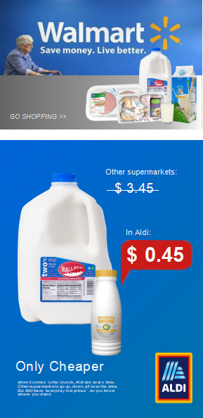

Biotechnology – A Solution to Hunger
Kaiser Jamil
Received 01 Mar 2021, Accepted 29 Oct 2021, Published online: 10 Dec 2021
World hunger and food insecurity is a recurring problem in most parts of the developing world. Among the
many potential biotechnologies that are available, and the different ways in which they can be applied, genetic modification (GM) of crops demands particular attention. Genetically modified crops possessing
genes from different species, could possibly relieve global food shortages. Although initial excitement surrounded the use of GM crops -- that they will provide bigger and better harvests for farmers -- there are still
questions about the benefits of such crops. In addition, the general public may not welcome the creation of
"super plants" as a viable option in solving global hunger
The environmental impact of GM crops is important with regard to creating food security in developing
countries. Genetically modified crops can potentially fail to germinate; kill organisms other than pests that
are beneficial to plants and reduce soil fertility; and potentially transfer insecticidal properties or virus resistance to wild relatives of the crop species.
A segment of the scientific community often proposes that export earnings from higher agricultural yields
can contribute to reducing food insecurity and hunger in developing countries. However, there are many
issues and challenges that beg the practicality of this proposal. A few crop varieties, specially created
through biotechnology, can improve yields, but biotechnology alone cannot solve the problem of hunger in
the developing world
Nevertheless, the potential advantages that biotechnology can confer across a wide range of agricultural
applications are in areas such as livestock management, storage of agricultural products and sustaining
current crop yields, while reducing the use of fertilizers, herbicides and pesticides. The real challenge is
whether we are smart enough to harness the benefits of biotechnological solutions. But what are these
solutions?
Biotechnology offers a very promising alternative to synthetic foods and an improvement on conventional
plant-breeding technologies. Combined with other advanced agricultural technologies, it offers an exciting
and environmentally responsible way to meet consumer demand for sustainable agriculture. When the benefits of GM crops reach small and marginal farmers, more Green Revolutions may become a reality.
Combating Hunger and Malnutrition
Malnutrition is the related term in medicine for hunger. The most recent estimate of the Food and Agriculture Organization says that 854 million people worldwide are undernourished. This is 12.6 per cent of 6.6
billion people in the world. Many of the 854 million that are undernourished, children being the most visible
victims, live in developing countries. Undernutrition magnifies the impact of every disease, including measles and malaria
Intellectual Property and Food Security
There are concerns about a technological landscape controlled almost exclusively by the private sector and
defined by patent protection. Patents allow large, private firms substantial control over plant genes, which
has worrisome implications. If farmers have to purchase seeds during every sowing season, it affects their
income and food security. Although biotech companies such as Monsanto and AstraZeneca have announced that they would not commercialize the so-called "Terminator" or seed-sterilization technology,
which is genetically designed to "switch off" a plant's ability to germinate a second time, the biotech industry collectively owns at least three dozen patents that control either seed germination or essential plant germination processes. This privatization of a plant's genetic resources puts not only agricultural research in
developing nations at a disadvantage, but might ultimately threaten the livelihoods of a majority of small
farmers in Africa, Latin America, and Asia who largely depend on seed saved from one crop to sow in the
next.
In developing countries, there may be a potential negative impact from Intellectual Property Rights (IPR)
over biotechnological products or the processes used in producing them. IPRs have been held not only by
private companies, but also by some public organizations making it impossible to use any aspect of biotechnology for improving major crop species without infringing a patent somewhere in the process. Because of IPRs, it has not always been possible to separate the biotechnology prospects from the business
interests involved. A major consequence of IPR in agricultural biotechnology is that many developing countries which have not yet invested in biotechnology may never be able to catch up in the future.
The world's food supply is abundant, not scarce. The world's production of grain and other foods is sufficient to provide at least 4.3 pounds of food per person, per day. The real reason for hunger in the world is
poverty, which often strikes women--the nutritional gatekeepers in many families--the hardest. Economists
argue that resolving hunger requires political solutions and not just agro-technical solutions. According to
them, instead of looking at biotechnology as a yet unproven and non-existent breakthrough, decision
makers should look at the full body of research that shows that solutions to eliminate hunger are not technological in nature, but rooted in basic socio-economic realities. This is not to say that technology, including
biotechnology, does not play a role in reducing, say, malnutrition, but there is no technology that can override the immediate political and social forces that keep people poor and hungry. The global biotechnology
industry has funnelled a vast majority of its investment into a limited range of products that have large, secured markets in the First World -- products which are of little relevance to the needs of the world's hungry.
Biotechnology has applications that can significantly solve the problem of world hunger. Green is the colour
of agricultural biotechnology, of fertility, self-respect and well-being. In my opinion, policymakers should
pragmatically consider modern biotech discoveries and assets as an important tool for solving the problem
of global hunger.
Sponsor


Advertisement
